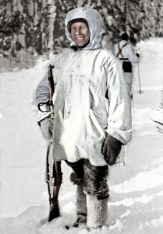

Simo Häyhä
The Soviet soldiers never saw him. Their artillery failed to kill him. Entire units refused to advance
because of his
skills. Simo Häyhä killed more enemy combatants than any sniper in recorded military history, and he did
it without the
telescopic sights that other marksmen considered essential.
Over 500 confirmed kills. Less than 100 days of combat. Temperatures that plunged to 40 degrees below
zero. The
34-year-old Finnish farmer accomplished what no sniper before or since has matched, using methods so
effective that the
Red Army launched artillery barrages on entire forest sections just hoping to eliminate him.
The invasion changed everything. Stalin sent over 500,000 troops across the border. Finland mobilized
roughly 300,000
soldiers. Häyhä grabbed his Finnish-produced M/28-30 rifle, a variant of the Mosin-Nagant, and reported
to the 6th
Company of Infantry Regiment 34.
Text taken from Military.com

Quote Credit: History's Deadliest Sniper - Simo Häyhä "The White Death"
Image Reference: r/HumansAreMetal
Fast Facts
- Nickname
- Born
- Died
- Confirmed Kills
- The White Death
- December 17, 1905
- April 1, 2002
- 542